Publications
Journals
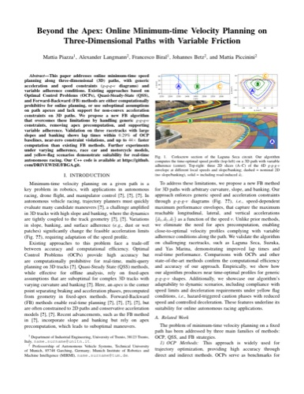
Beyond the Apex: Online Minimum-time Velocity Planning on Three-Dimensional Paths with Variable Friction
IEEE Robotics and Automation Letters, 2026
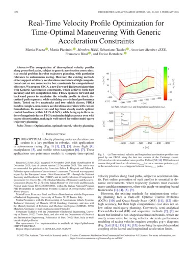
Real-Time Velocity Profile Optimization for Time-Optimal Maneuvering With Generic Acceleration Constraints
IEEE Robotics and Automation Letters, vol. 11, no. 2, pp. 1674-1681, 2026
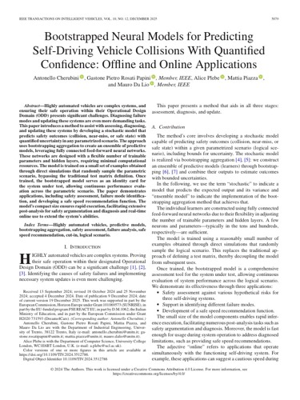
Bootstrapped Neural Models for Predicting Self-Driving Vehicle Collisions With Quantified Confidence: Offline and Online Applications
IEEE Transactions on Intelligent Vehicles, 2024
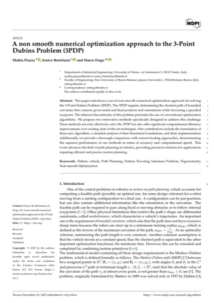
A Non-Smooth Numerical Optimization Approach to the Three-Point Dubins Problem (3PDP)
Algorithms, vol. 17, no. 8, p. 350, 2024
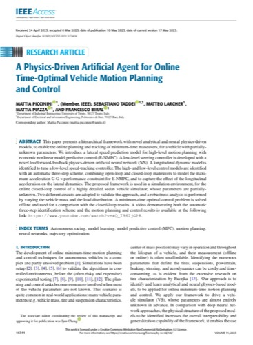
A Physics-Driven Artificial Agent for Online Time-Optimal Vehicle Motion Planning and Control
IEEE Access, vol. 11, pp. 46344-46372, 2023
Conferences
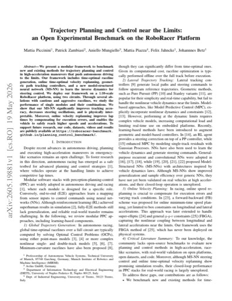
Trajectory Planning and Control near the Limits: an Open Experimental Benchmark on the RoboRacer Platform
IEEE ITSC conference, 2026
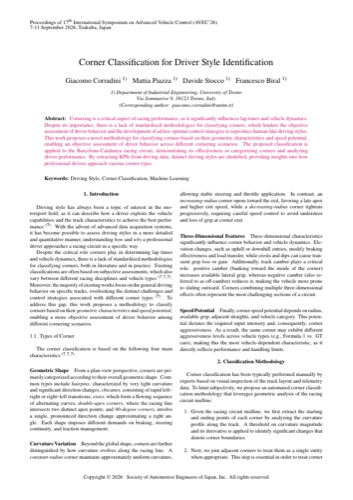
Corner Classification for Driver Style Identification
AVEC 2026 conference, 2026
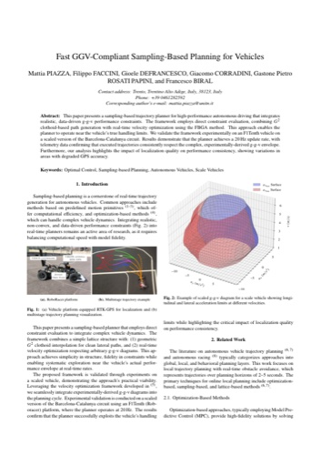
Fast GGV-Compliant Sampling-Based Planning for Vehicles
AVEC 2026 conference, 2026
AVEC 2026
Modular Motion Planner for Autonomous Vehicles in Structured and Unstructured Scenarios
AVEC 2026 conference, 2026
German Robotics Conf.
FBGA: a Forward-Backward Method for Online Time-Optimal Velocity Planning with Generic Acceleration Constraints
Proceedings of the 2nd German Robotics Conference, Cologne, Germany, 2026 (Extended abstract)
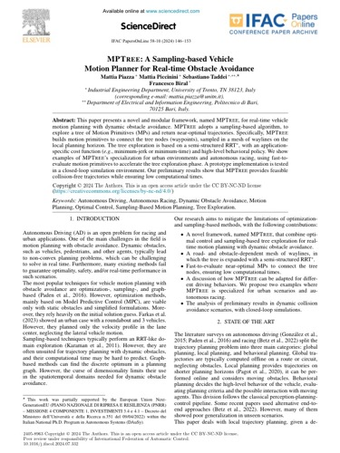
MPTree: A Sampling-based Vehicle Motion Planner for Real-time Obstacle Avoidance
IFAC-PapersOnLine, vol. 58, no. 10, pp. 146-153, 2024
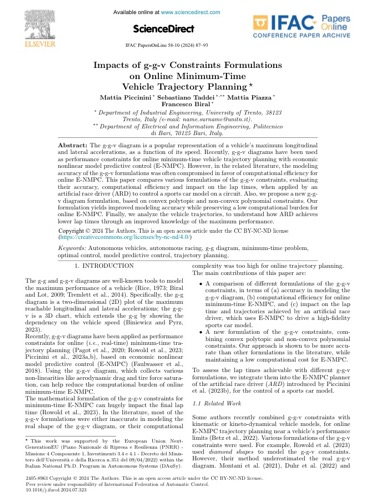
Impacts of ggv Constraints Formulations on Online Minimum-Time Vehicle Trajectory Planning
IFAC-PapersOnLine, vol. 58, no. 10, pp. 87-93, 2024
Workshops
ICRA 2026 Workshop
Towards a Fully Differentiable Framework for Autonomous Driving Based on Model-Structured Neural Networks
IEEE ICRA 2026 Workshop on Autonomous Driving, Wien, Austria, 2026
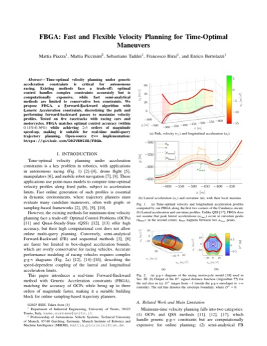
FBGA: Fast and Flexible Velocity Planning for Time-Optimal Maneuvers
ICRA Workshop on Frontiers of Optimization for Robotics, 2nd Edition, 2026
ICRA 2026
Supervised theses
MS theses in Mechatronics Engineering, University of Trento, that I supervised.
- 2026 - Sabrina Ciuffoletti, Modular Optimization-Based Motion Planner for Autonomous Agents: Application on Autonomous Vehicles in Structured and Unstructured Environments. Supervisors: Gastone Pietro Rosati Papini, Mattia Piazza.
- 2025 - Mattia Pettene, Development of a Motion Primitive based Planner for Autonomous Driving Applications. Supervisors: Francesco Biral, Mattia Piazza.
- 2024 - Annachiara D'Aquilio, Optimal Trajectory Planning for Kernels of CNC Machine Tools. Supervisors: Enrico Bertolazzi, Paolo Bosetti, Mattia Piazza.
- 2023 - Marco Grano, Design and Optimization of a Speed Controller for Cooperative Adaptive Cruise Control (C-ACC). Supervisors: Francesco Biral, Mattia Piazza, Juan Pablo Salmoiraghi.